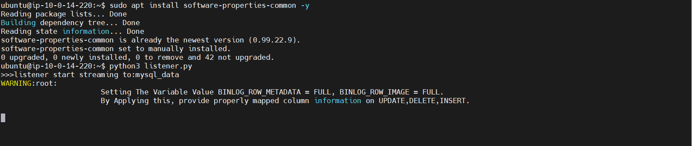

Hãy bảo đảm rằng, trên máy của bạn có cài đặt MobaXTerm. Nếu chưa cài đặt, truy cập link để cài đặt.
Chạy MobaXterm, chọn Session -> SSH
Tiến hành cài đặt python 3.12 và pip bằng cách chạy lần lượt các command
sudo apt install software-properties-common -y
sudo add-apt-repository ppa:deadsnakes/ppa
sudo apt udpate
sudo apt install python3.12 python3-pip -y
Tạo file listener.py bằng command vim listener.py, sau đó paste đoạn code sau vào và ấn tổ hợp ESC -> :wq! -> Enter
import boto3
import json
from pymysqlreplication import BinLogStreamReader
from pymysqlreplication.row_event import (
DeleteRowsEvent,
UpdateRowsEvent,
WriteRowsEvent,
)
def main():
kinesis = boto3.client("kinesis",region_name="ap-southeast-1")
MYSQL_SETTINGS = {
"host": "<database endpoint>",
"port": "<database port>",
"user": "<database username>",
"passwd": "database password"
}
'''
* server_id is your slave identifier, it should be unique.
* set blocking to True if you want to block and wait for the next event at
the end of the stream
* only_events will listen only to describes events
'''
print(">>>listener start streaming to:cdc-data-stream")
stream = BinLogStreamReader(connection_settings=MYSQL_SETTINGS,
server_id=100,
blocking=True,
resume_stream=True,
only_events=[DeleteRowsEvent, WriteRowsEvent, UpdateRowsEvent])
for binlogevent in stream:
for row in binlogevent.rows:
print(">>> start event")
event = {"schema": binlogevent.schema,
"table": binlogevent.table,
"type": type(binlogevent).__name__,
"row": row
}
print(">>>event",event)
output = kinesis.put_record(StreamName="<stream name>", Data=json.dumps(event), PartitionKey="default")
print(">>kinasis output",output)
stream.close()
if __name__ == "__main__":
main()
Cập nhật thông tin kết nối đến RDS và Kinesis đã tạo ở bước 2.2 và 2.5
Tạo file để lưu các dependencies vim requirements.txt và paste nội dung sau vào file
requests
boto3
mysql-replication
Tiến hành cài đặt các dependencies bằng command pip install -r requirements.txt
Sau đó, ta chạy thử xem code đã run thành công chưa bằng command python3 listener.py
Kết quả như hình là code đã chạy thành công 